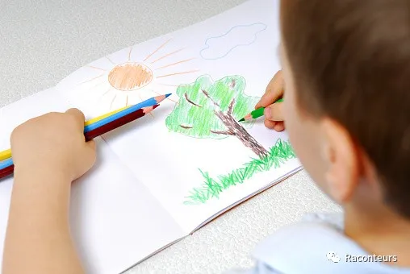
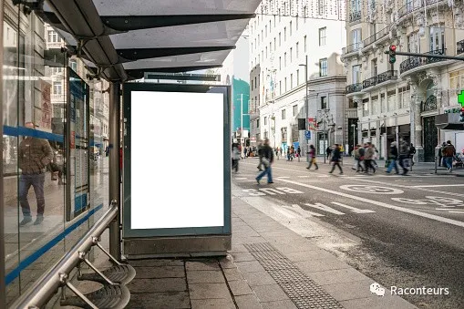
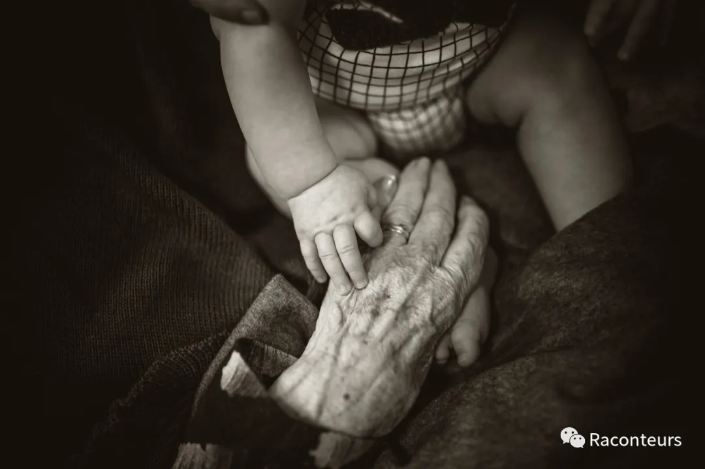

Nina was a domestic worker from the Philippines, always smiling, short in stature, with dark skin and a face full of freckles and pimples.
It must have been five or six years now, I remember she was often in poor health, even in spring, she would always be wrapped in thick clothes, looking quite bloated, and it was because of her health that she returned to her hometown.
When Nina first arrived, it was her first time working as a nanny. In her early twenties, she couldn't speak Chinese and could only try to communicate with me in broken English with an accent. She had no family, only a broker brother who treated her as a money-making tool and left her alone in a foreign country to work.
On her first day, she didn't know any better and filled my thermos with a cup of boiling water at 100 degrees. That afternoon, as soon as I opened the thermos and touched the water, I dropped the cup as if struck by lightning. As soon as I got home, without even putting down my bag, perhaps out of anger, I went straight to her and shouted, "Nina, how could you do this? The water is so hot! My mouth is still burning, and you're not good at all!" The cup was then slammed onto the other end of the sofa.
At that time, I was very young and didn't understand the ways of the world or behave considerately. I always frowned at Nina, "Nina! Why are you late again?" "Nina, where is my comb?" Nina would always be tidying up my hair, sighing, and with a helpless frown, she would whisper, "Ada, if you keep this up, I will go back!" In the end, she really did turn around and leave.
Now, thinking back, the longer the time passed, the more my guilt has settled and become hard to let go. Many nannies have come and gone in a hurry, but I always remember Nina, the first one who took care of me, a friend I knew rather than just a nanny, a naive girl venturing into the city alone. Gradually, as life calmed down, those past events began to come back to life. The more I grew up and experienced some unavoidable pain in life and some unexpected frustrations, the first time I stepped out of the comfort zone that my family had built for me, I began to understand Nina's pain of living under someone else's roof, her hidden longing, "You can never truly understand a person until you walk a mile in his shoes, stand in his perspective, and even passing by will make you feel sad."
Over time, she mostly learned some Chinese. She was particularly good to the children, especially my sister and me, after all, she was also a child. I vaguely remember under the chandelier in the living room at night, we were lying on the wooden floor, barefoot, using colorful watercolors to paint on white paper, she said "tree." I said "树." My sister was drawing strange doodles on her own. Sometimes she would tell us stories with a smile, I remember her smile was very sweet, her brows knitted together, laughing back, revealing eight white teeth, and the pimples on her face suddenly became less noticeable.
Grandma would often secretly give her money, hundreds at a time, because her salary always had to be handed over to the broker, also known as her cousin, without any reservation. Grandma said, "Keep it for yourself, don't hand it over again, be less naive." She always looked embarrassed, waving her hand, saying it would be handed over sooner or later, helplessly.
At the end of winter, her health was getting worse and there was no sign of improvement. She often hung her head, like a bitter melon, and had no smile. The family discussed that it was not a solution and advocated for sending her back. On the afternoon of her departure, her eyes drooped. I was sending her off for the last time, also for the first time. I knew that she had just become familiar with here and was about to rush to another unknown place. I sent her to the bus station, the weather was really heavy that day, for a moment it was hard to breathe. I saw someone waiting for her, her brother looked a bit fierce, wearing a low cap, burying his head in his chest to light a cigarette. She was draped in a robe, looking weak, and boarded the bus.
She left in a hurry, leaving behind only a photo taken before she left. Nina was an illegal immigrant at the time, without a household registration or identity. Before saying goodbye, in order not to be known, the family deleted all traces connected with her, except for the photo I kept secretly.
